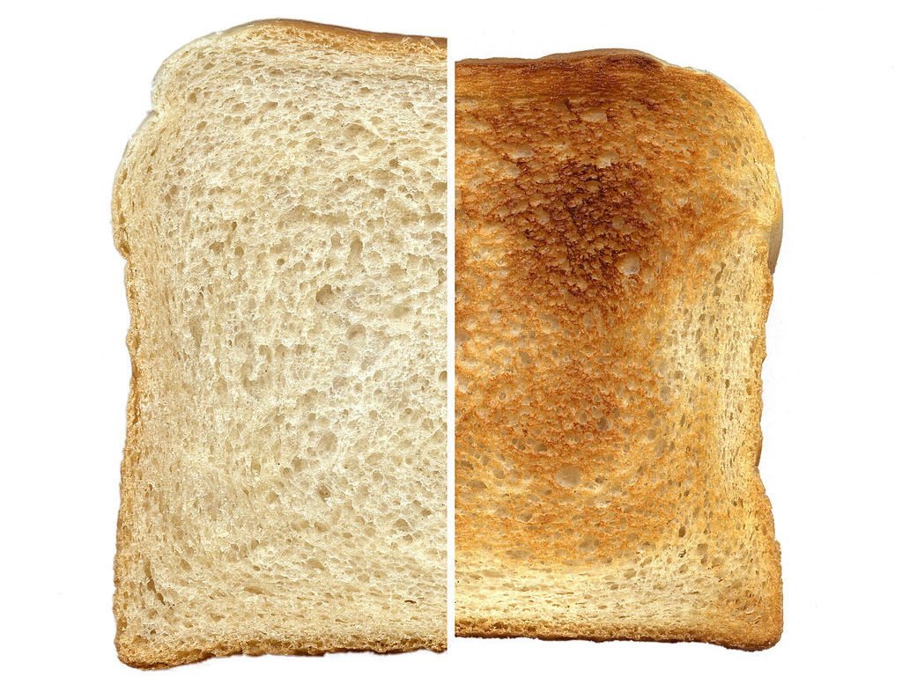
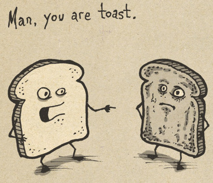

chapter12.1--handout
Background Information
Fratellini Family 弗拉泰利尼家族
"Everybody. They're mad about it in New York. It's just like the Fratellinis used to be."（“人人都在唱。整个纽约都着迷了。就像过去对弗拉泰利尼家族的那股劲头。”）
弗拉泰利尼家族（Fratellini Family）是欧洲马戏世家，以保尔（Paul）、弗朗索瓦（François）和阿尔贝特（Albert）三兄弟扮演的丑角而闻名。他们的才智、魅力和高超的演技受到广泛的赞誉，在第一次世界大战之后一度风靡巴黎，成为巴黎知识分子们的心头好（darlings of the Parisian intellectuals）.
弗朗索瓦善于扮演漂亮华丽的白脸小丑；阿尔贝特则擅长扮演不幸的，衣衫蓝缕的“奥古斯特”，他独创了一种设计得奇形怪状的新化妆：眉毛画地黑而且高，夸张的大嘴和鳞茎状的红鼻子（这种装扮几乎成为后来小丑化妆的典型风格）。
至于保尔则扮演公证人的角色，仅仅稍做化妆，其笑料则完全来自他在两兄弟之间的滑稽表演。值得一提的是，这个家族马戏团曾经在一战后的欧洲进行旅行表演，甚至去过当时刚刚成立的苏联。
继三兄弟之后，保尔之子维克多及维克多之女阿尼在法国成功继承了家族在丑角方面的表演传统，延续了这个丑角家族的艺术生命力。
Vocabulary
expatriate
n. 侨民，移居国外者；被逐出国外者（a person living in a country that is not their own）
原文：You know what you are? You're an expatriate.
你知道你是哪号人？你是一名流亡者。
💧expatriate 既可以指“自愿离开原籍国的人”（who is voluntarily absent from his/her home country）, 也可以指“被驱逐出国的人”（who is expelled from a country）. 注意如果说一个人是American expatriate也就是指其原籍国是美国。
impotent
adj. 无能为力的，无影响力的（unable to take effective action）
性无能的（unable to have sex）
原文："You don't work. One group claims women support you. Another group claims you're impotent."
“你不工作。有帮人坚持说是有些娘们在养你。另外有帮人说你是个不中用的男人。”
💧这里的impotent是双关，包含两层意思，一是指Jake因为在战争中受伤而导致性无能，另一是指他终日碌碌无为，什么事也干不了。我们再来看一个例句：The aggression of a bully leaves people feeling hurt, angry and impotent.
恶棍的挑衅让人感到受伤、愤怒而又无力。
Crush Your Problems
1、"Been working for the common good? Splendid. I want you to do that every morning."
“为我们的共同利益卖力？太好了。我希望你天天早晨都这样做。”
💧表达精讲
common good 原本是哲学、经济学以及政治科学当中的一个概念，也可以称作commonwealth或general welfare, 表示“共同利益”（the advantage of everyone）. 这里的“为我们的共同利益卖力”是指Jake去抓鱼饵来给俩人的钓鱼作准备。
2、I thumbed my nose.
我用拇指顶在鼻尖上，冲着他做了个轻蔑的手势。
💧表达精讲
thumb one's nose 字面上的意思就是“把拇指顶在鼻尖上”，这个动作一般表示“轻蔑”（to show contempt or lack of respect）.
不过现在我们说thumb one's nose at sb的时候，一般没有实际的动作，而只是形容“（公开地）挑战某人的权威，表示不屑”，比如：Don't thumb your nose at the boss if you want to keep your job!（如果你不想丢了工作的话，就别对你的老板一副嗤之以鼻的样子！）
3、He kept on singing until he came down-stairs. The tune was: "The Bells are Ringing for Me and my Gal."
他从楼上一直唱到楼下。用的是《我和我的姑娘行婚礼的钟敲响了》那支歌的曲调。
💧知识拓展
Bill哼的调的歌名应为"For me and my Gal"（gal即"girl, young woman"）. 它的第一句歌词就是"The bells are ringing for me and my gal". 这首歌1917年发行后非常流行，演唱者是George W. Meyer, 在当时是“锡盘巷”（Tin Pan Alley）流行乐的代表人物。
4、"Hey! that's not the way," Bill said. "Say something ironical. Make some crack about Primo de Rivera."
“嘿！不是这么说的。”比尔说。“说些俏皮话。说些有关普利莫·德·里维拉的挖苦话。”
💧表达精讲
make crack(s) about 是指“说俏皮话，或是粗鲁的玩笑”（a clever joke or rude remark）, 比如：He’s always making cracks about how stupid I am.（他老是开玩笑说我愚蠢。）
💧知识拓展
Primo de Rivera（1870-1930）是西班牙的一位将军，1923年通过发动军事政变上台成为独裁者（dictator）, 直到1930年因为经济管理失败引起人民普遍不满才被迫下台。小说中的这段对话进行时他才刚上台没几年。
5、"I could ask her what kind of a jam they think they've gotten into in the Riff."
“我可以问她，他们在里夫山脉陷入了什么样的‘果酱’。”
💧表达精讲
jam 在这里是双关——“果酱”和“困境”（a difficult situation）, get into a jam 就是指get into trouble.
Bill让Jake用俏皮的方式问女孩有没有果酱（"Ask her if she's got any jam," Bill said. "Be ironical with her."），他一开始说的是"Have you got any jam?"，Bill嫌不够俏皮，于是Jake又用了一个双关。
💧知识拓展
Riff（又作Rif）即“里夫山”，在摩洛哥北部沿海，在当地语言中，这个名字表示“海岸”（the coast）或是“大陆的边缘”（the edge of the land）. 这一片地方历来遭到西班牙的骚扰和侵袭，尤其是在20世纪20年代当中。虽然该地的原住民族——柏柏尔人部族（The Berbers）在首领阿布杜勒·克里姆的领导下奋起抗击西班牙的入侵，并且利用其险要的地形赢得了不少战役，但最后还是在1926年因为法国对西班牙的援助而最终被征服。
Content Analysis
今天的情节主要围绕Jake和Bill在午饭前的一段玩笑和争辩展开。除了用典（对历史事件和人物的引用）非常多以外，这部分对话内容还有一个特点——主角们仿佛在谈论其他人和其他事情，但实际指向都是主角自己（在这里也就是Jake，我们稍后会分析）。因此在读者看来，就形成了一种很微妙并且有趣的巧合。
比如Bill一直就“俏皮/讽刺和怜悯”（Irony and Pity）抓着Jake不放，这里的诙谐之处在于，Jake本身就是“俏皮/讽刺和怜悯”的象征（化身）——
💧Clue 1: Jake himself is the token of Irony and Pity.
Evidence 1: "You don't work. One group claims women support you. Another group claims you're impotent."
“你不工作。有帮人坚持说是有些娘们在养你。另外有帮人说你是个不中用的男人。”
Evidence 2: Bill said. "And you're a hell of a good guy. Anybody ever tell you were a good guy?"
比尔说。“你呢，是个大好人。有人当面说过你是好人吗？”
首先，Jake的讽刺（或令人哭笑不得）之处在于，一方面他是一个不错的人，连Bill都赞不绝口，还打趣说道"I'm fonder of you than anybody on earth". 另一方面，Jake又是一个终日碌碌无为的人，并且还因为战争丧失了重要的生理机能，这种矛盾形成了一种很戏剧化的效果（Jake is a kind of superman who nevertheless can't perform the most basic of manly activities）. 由此他也深深引起了读者的怜悯和同情。
Jake和Bill在争论的另一个话题，其实同时和他们俩都相关。也就是所谓的“流亡者，移居者”（expatriate）.
💧Clue 2: Jake becomes an expatriate and wastes his life away.
Evidence 1: "You know what's the trouble with you? You're an expatriate. One of the worst type. Haven't you heard that? Nobody that ever left their own country ever wrote anything worth printing. Not even in the newspapers."
“你知道你的问题在哪儿？你是一名流亡者。是最不幸的典型中的一份子。你没有听说过？一个人只要离开了自己的祖国，就写不出任何值得出版的作品。哪怕是报上的一篇新闻报道。”
Evidence 2: "You're an expatriate. You've lost touch with the soil. You get precious. Fake European standards have ruined you. You drink yourself to death. You become obsessed by sex. You spend all your time talking, not working. You are an expatriate, see? You hang around cafés."
“你是一名流亡者。你已经和土地失去了联系。你变得矫揉造作。冒牌的欧洲道德观念把你毁了。你嗜酒如命。你头脑里摆脱不了性的问题。你不务实事，整天消磨在高谈阔论之中。你是一名流亡者，明白吗？你在各家咖啡馆来回转悠。”
这里的"You've lost touch with the soil"是一句双关，不仅指在地理上Jake离开了祖国来到巴黎，也暗指他不能脚踏实地地生活，而只是在无止尽地挥霍时间、通过酒精和玩乐来抵抗对人生的幻灭感。
这一段的写作灵感可能就来自于格特鲁德·斯坦（Gertrude Stein，美国作家，当时活跃在巴黎的文化圈）对海明威说过的一番话："That is what you are. That's what you all are ... all of you young people who served in the war. You are a lost generation."
其实这也是海明威对于自我以及同代人的困惑和探索：他们是否能在巴黎，或者现在又短暂地逃到了西班牙，找到可以依托的人生信条，来消除这种绝望和幻灭感？
Today's Bonus
💧吐司的由来以及有趣的俚语
The girl came in with the coffee and buttered toast. Or, rather, it was bread toasted and buttered.（女孩端着咖啡和涂黄油的吐司进来。或者不如说是普通的面包片烤过后涂上了黄油。）
为什么Jake在这里要强调这是烤过后的普通面包片（bread toasted）而不是吐司（toast）呢？其实吐司一般分为两种，一种是法式吐司，另一种就是普通的吐司。
1. 普通吐司和法式吐司的区别
普通的吐司其实就是“烤面包片”（这也是toast这个词的本义）。toast 从拉丁文的torrere (to burn) 而来，准确的含义就是“切成片的面包经过浅表烧糊”（sliced bread singed by heat）.

而法式吐司（French toast）则是用鸡蛋和牛奶把面包片裹起来再进行轻炸或油煎而制成（a dish made of bread soaked in eggs and milk, then fried）, 因此法式吐司也叫eggy bread. 以及我们平时看到的“西多士”（粤语里对Western toast的音译）也是这种吐司哦~
对于Jake来说，他因为长期生活在巴黎，所以自然会觉得吐司就应该是法式吐司那样的，而普通的烤面包则称不上是吐司。
2. 吐司的由来
关于吐司的由来有很多传说，其中一个是说从埃及而来——基于面包其实是古埃及人发明的，因为他们发现如果把面团放一会儿（相当于“醒面”），它就会膨胀起来（空气中的酵母菌孢子计进入面团里），接着再烤一下，就可以维持这个形状了。
学会做面包后的埃及人又发现了一个问题，也就是长时间把面包放在沙漠的高温环境下，面包会变得很硬，吃起来很不方便（When left out in the desert heat for long periods of time, the bread would go hard and became difficult to eat）, 但如果是把面包切成片再烤一下，就既能便于储藏又能维持美味的口感了（By scorching slices of bread, they lasted longer as a palatable food）.
3. 和吐司相关的有趣俚语
①sb is toast
这个表达的意思就是“某人已经完蛋了、成为过去时了”（a state of being "outcast", "finished", "burned, scorched, wiped out, [or] demolished"）, 这个表达和说"sb is history"的意思是一样的。

②warm as toast
这是一个比喻的说法，表示“非常暖和舒适”（very warm and cozy），比如：
The baby will be warm as toast in that blanket.
这个婴儿睡在毯子里话会很暖和。
We were as warm as toast by the side of the fire.
我们待在炉火边可舒服了。
③ to toast sb's health
toast 有“敬酒”的这一层含义，原因是最早的传统有把热面包加到酒里形成一种独特的风味（warmed bread was placed in a drink），后来这种酒也被认为是“尊敬”的象征，所以to toast sb's health就有了“敬祝某人健康”的意思。
to propose a toast 也是一样的含义哦~比如：
Before we all sit down to our meal, I just want to propose a toast to my mother.
在我们所有人落座吃饭之前，我想先向我的母亲敬一杯酒。
关于toast还有一个有趣的现象叫作"the buttered toast phenomenon", 感兴趣的话也可以去查一查它是指什么哦~